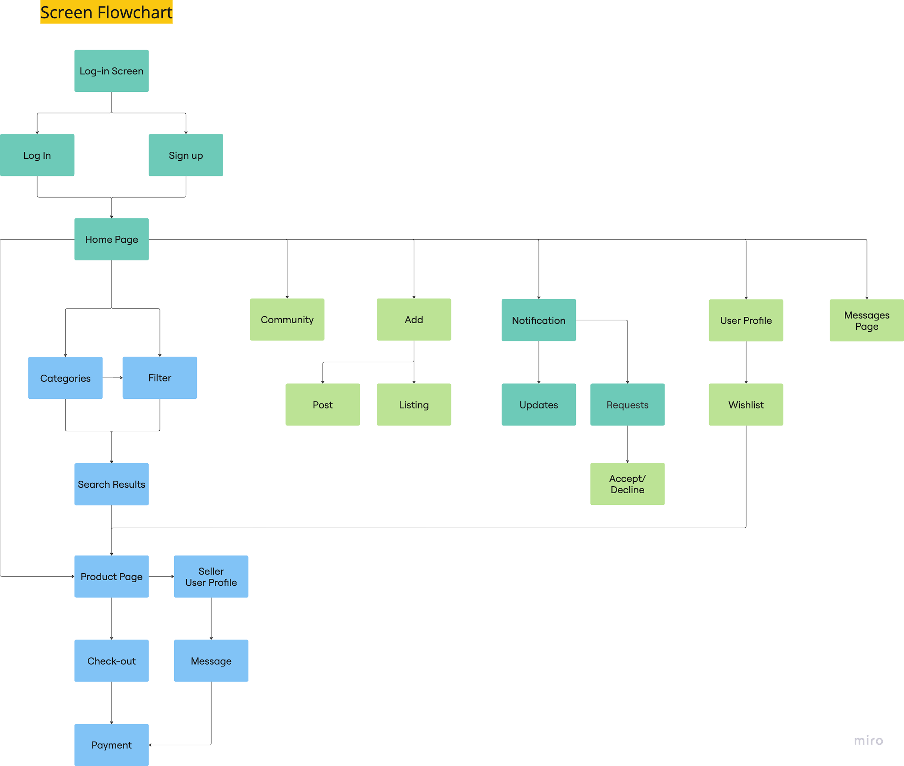
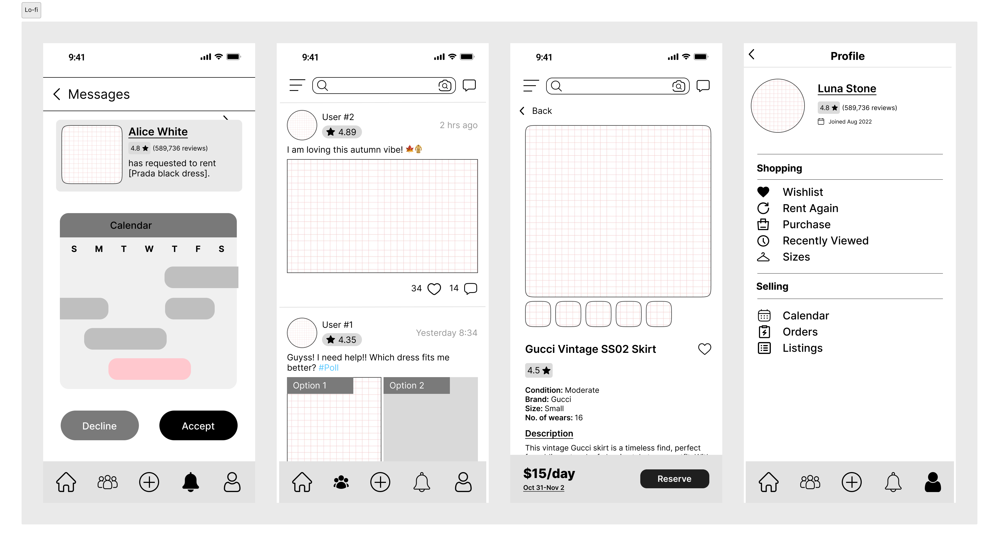
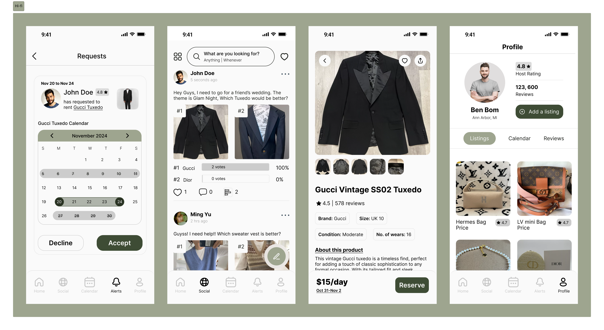

ReFine
Community-driven fashion rental platform designed for trust, sustainability, and connection.
ROLE
UX Designer & Researcher
TIMELINE
Oct – Dec 2024
TEAM
3 members (Sophia Lin, Reet Oberoi, Olivia Harris)
TOOLS
Figma, Miro
Camille gets invited to a formal dinner on campus. She wants to dress up — she has the eye for it — but buying something new for one night isn't in the budget. She asks around in a group chat; someone says they can probably lend her a dress. But Camille's never met them, and she's not sure how the handoff would work, or what happens if something goes wrong. It feels like too much friction. She ends up wearing something she's already worn twice. The outfit was fine. The experience wasn't.
How might we make peer clothing rental feel as easy and trustworthy as borrowing from a close friend?
TL;DR — AT A GLANCE
Situation
Students want stylish outfits for events but can't justify buying new — and existing peer rental options feel too risky or opaque to trust.
Task
Design a two-sided peer-to-peer clothing rental platform that works for both lenders and renters — balancing control, trust, and convenience.
Actions
Competitive analysis of Rent the Runway, Poshmark, and Depop. Informal interviews with student renters and lenders. Iterated from paper sketches to hi-fi through three feedback rounds focused on card clarity, trust signals, and visual consistency.
Results
Hi-fi prototype with complete renter and lender flows — verified profiles, dual ratings, in-app messaging, and a community section. The two sides that competing platforms typically optimize separately.
✦ SITUATION
The trust gap in peer rental
Peer-to-peer clothing rental sounds appealing in theory. In practice, students stop at the trust barrier: Is this item actually the right size? What happens if it gets damaged? Can I trust a stranger's listing? Existing platforms like Poshmark and Depop optimise for selling, not borrowing — leaving renters and lenders with no shared framework for how a transaction should work.
What renters need
- • Accurate size and condition info
- • Clear handoff and return process
- • Protection if something goes wrong
- • Trust signals before paying a stranger
What lenders need
- • Control over who borrows their items
- • Reliable payment and return
- • Accountability if items are damaged
- • Low effort to list and manage
✦ TASK
Design for both sides of the exchange
Most rental apps optimise for one user type. ReFine had to work for both — which meant designing flows where lenders feel in control and renters feel safe, without making either flow feel complicated. Our design statement: a community-based, sustainability-focused marketplace for peer-to-peer clothing rental.

✦ ACTIONS
Research → sketches → hi-fi, in three rounds
Competitive analysis
Audited Rent the Runway, Poshmark, and Depop for trust mechanics, listing quality, and dispute resolution. Found that none had a strong dual-rating system or in-app messaging for pre-rental coordination — both gaps we addressed directly.
Informal interviews
Spoke with student renters and lenders on campus. The clearest signal: "The more safe and reliable the service is, the better." Trust and transparency weren't nice-to-haves — they were the threshold for using the product at all.
Three iteration rounds
Paper sketches → wireframes → hi-fi. Feedback focused on three areas each round: card information hierarchy, age and rating filters, and visual consistency. Each round tightened the trust signals on both the listing and checkout sides.


✦ RESULTS
A marketplace built on mutual accountability
The final prototype covers the complete flow for both sides: browse, request, approve, pay, return, and rate. Key trust features that emerged from research:
Verified profiles
University email verification links listings to real people — reducing anonymity-driven risk on both sides.
Dual rating system
Renters and lenders each rate the transaction. Public ratings create accountability without a formal dispute system.
In-app messaging
Pre-rental chat lets renters ask about fit or condition — and lets lenders screen requests before approving.
Try the Interactive Prototype
Experience the sustainable fashion rental flow in Figma
View Prototype